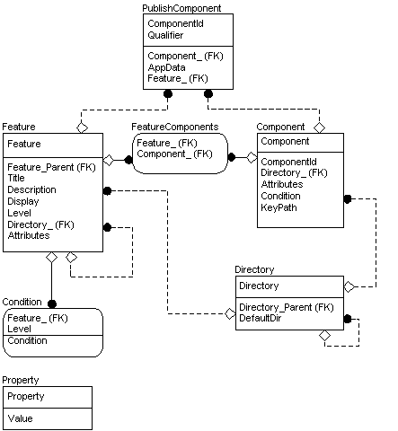

Core Tables Group

See the entity relationship diagram legend for more information about this diagram.
The core group consists of tables describing the fundamental features and components of the application and the installer package. Developers of install packages should therefore consider how to populate these tables first because the organization of much of the database will become apparent from the content of this group.
- The Feature table lists all features belonging to the application.
- The Condition table contains the conditional expressions that determine whether or not a particular feature will be installed.
- The FeatureComponents table describes which components belong to each feature.
- The Component table lists all components belonging to the installation.
- The Directory table lists the directories that are needed during the installation. Because each component must be associated with one and only one directory, the Component table is closely related to this table and has an external key to the Directory table.
- The PublishComponent table lists the features and components that are published for use by other applications. Components and Features are the two types of feature advertisement.